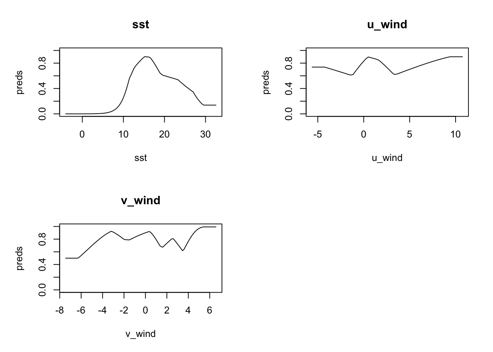
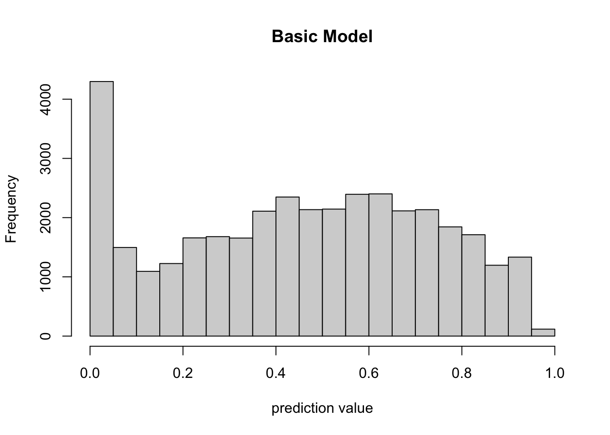
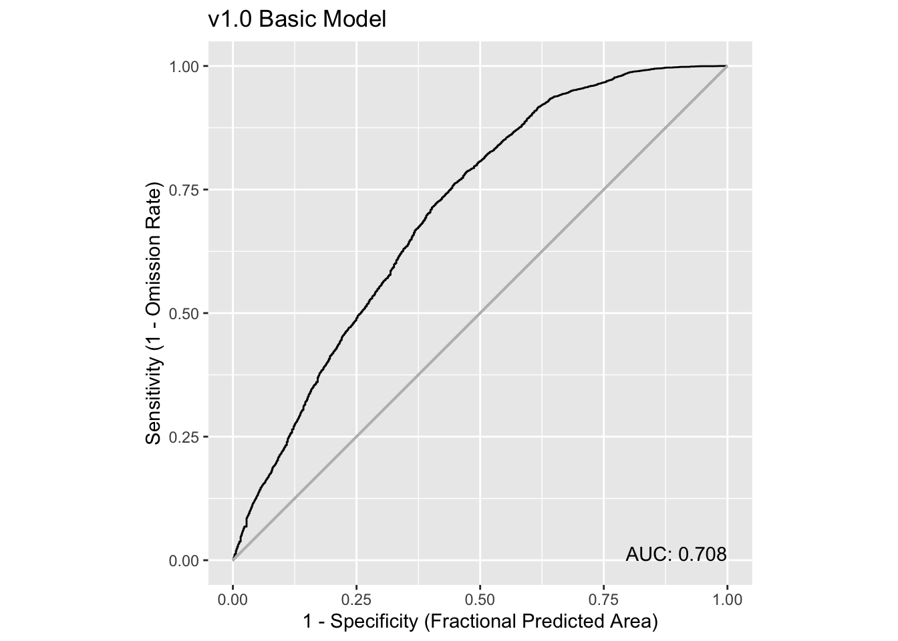
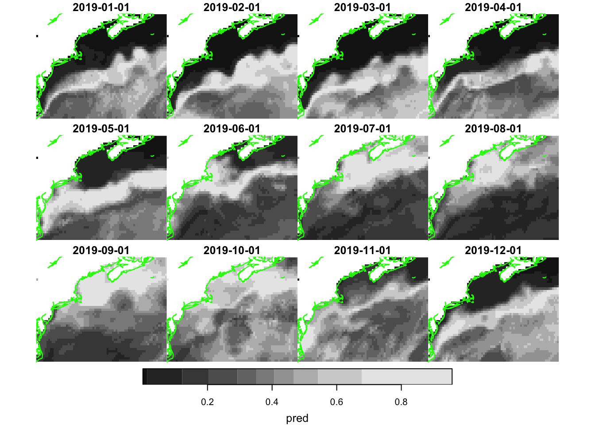
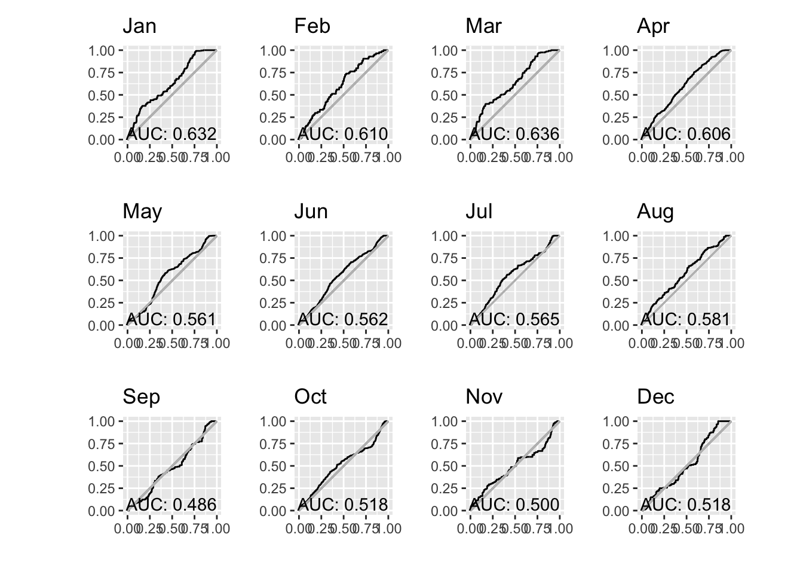
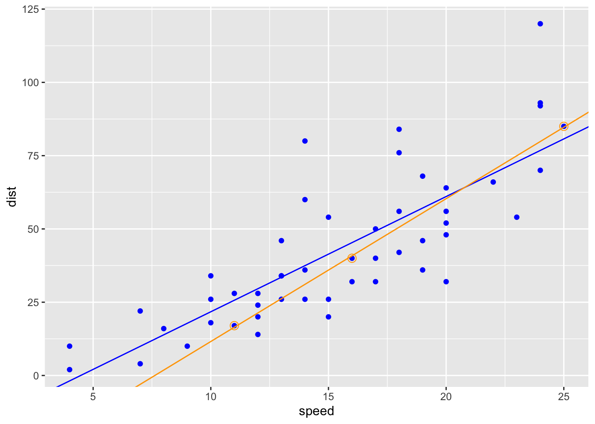

source("setup.R")
obs = sf::read_sf(file.path("data", "obs", "obs-covariates.gpkg")) |>
sf::st_set_geometry("geometry") |>
dplyr::mutate(month = factor(format(month_id, "%b"), levels = month.abb),
.before = geometry)
bkg = sf::read_sf(file.path("data", "bkg", "bkg-covariates.gpkg")) |>
sf::st_set_geometry("geometry") |>
dplyr::mutate(month = factor(format(month_id, "%b"), levels = month.abb),
.before = geometry)Basic modeling
So at this point we have point data for observation and background that have been joined with common environmental covariates (aka predictors). Here we show the basic steps taken to prepare, build and assess a model. Later, we’ll try more sophisticated modeling, such as modeling by month or splitting the data into training-testing groups.
1 Load data
Here we load the observation and background data points. We add a column identifying the month of the year.
2 Prepare the input data
The input data must be formed as two parts:
a vector indicating which rows in the table are observations and which are background
a plain (non-spatial) table of covariates for both observation and background free of missing data
2.1 The input table
Simply strip the spatial information off of obs and bkg, select just the environmental covariates, and then row bind them together
input_obs = obs |>
sf::st_drop_geometry() |>
dplyr::select(dplyr::all_of(c("sst", "u_wind", "v_wind"))) |>
na.omit()
input_bkg = bkg |>
sf::st_drop_geometry() |>
dplyr::select(dplyr::all_of(c("sst", "u_wind", "v_wind"))) |>
na.omit()
input_table = dplyr::bind_rows(input_obs, input_bkg)2.2 The input vector
The each element of the input vector must have a 1 for each observation row, and a 0 for each background row. Since we arranged to have all of the the observations come first, we can easily make the vector with two calls to rep().
input_vector = c( rep(1, nrow(input_obs)), rep(0, nrow(input_bkg)) )3 Build the model
Here we pass our inputs to the maxnet() function, leaving all of the optional arguments to the default values. Be sure to look over the docs for model construction - try ?maxnet
model = maxnet::maxnet(input_vector, input_table)That’s it. The returned object is of maxnet class; it’s essentially a list with all of the pertinent information required for subsequent use.
4 Assess the model
So what do we know about the model? Is it any good?
One thing we can do is to plot what are called response curves. These show, for each parameter, how the model responds along the typical range of parameter values. We plot below the responses with type cloglog which transform the response value into the 0-1 range.
plot(model, type = "cloglog")
Let’s take a closer look starting with sst. The model has peak response to sst in the range (approximately) 12C-17C. u_wind shows peak model response in near calm (<5m/s) speeds, but interestingly eastward winds (positive) are more favorable for observation than westward winds. The north-south component of wind, v_wind seems to have strong discriminating power for northward winds (positive).
We can do more if we make a prediction, but, first, let’s save the model to file so we can retrieve it later.
5 Save the model
In this tutorial we are going to build three types of models: basic, monthly and split (between testing and training). We should organize the storage of the models in a way that makes sense. With each model we may generate one or more predictions - for example, for our basic model we might tyr to hind-cast a individual years. That’s a one-to-many to relationship between model and predictions. We suggest that you start considering each model a version and store them accordingly. Let’s use a simple numbering scheme…
v1.0for the basic modelv2.jan, v2.feb, ..., v2.decfor the monthly modelsv3.0, ...for for the split model(s)
The maxnetic provides some convenience functions for working with maxnet models including file storage functions.
v1_path = file.path("data", "model", "v1", "v1.0")
ok = dir.create(v1_path, recursive = TRUE, showWarnings = FALSE)
maxnetic::write_maxnet(model, file.path(v1_path, "model_v1.0.rds"))6 Make a prediction
Now we can make predictions with our basic model. We’ll do it two ways. First by simply feeding the input data used to create the model into the prediction. This might seems a bit circular, but it is perfectly reasonable to see how the model does on already labeled data. Second we’ll make a prediction for each month in 2020 using raster data.
6.1 Predict with a data frame
Here we provide a data frame, in our case the original input data, to the predict() function with type cloglog which transform the response value into the 0-1 range. In the histogram of predicted values below, we can see that most predicted values indicate low likelihood of observation. It’s hard to know without context what that means about our model. Further investigation is required.
Note that we cast the predictors as a matrix to work with maxnet::predict().
prediction = predict(model, input_table, type = 'cloglog')
hist(prediction, xlab = "prediction value", main = "Basic Model")
6.1.1 How did it do?
We can use some utilities in the maxnetic package to help us assess the model. The pAUC() function will compute statistics, include a presence-only AUC value. We need to pass it two items - the universe of predictions and the predictions for just the presence points. The plot below shows the Receiver Operator Curve (ROC) and the associated presence-only AUC value.
ix = input_vector > 0
pauc = maxnetic::pAUC(prediction, prediction[ix])
plot(pauc, title = "v1.0 Basic Model")
Overall, this is telling us that the model isn’t especially strong as a prediction tool, but it is much better than a 50-50 guess (that’s when AUC is close to 0.5, and the curve follows the light grey line). Learn more about ROC and AUC here.
6.2 Predict with rasters
We can also predict using raster inputs using our basic model. Let’s read in rasters for each month of 2019, and then run a prediction for each month.
We provide a function read_predictors() that will read and bind the rasters together for you given the filtered databases and paths. So, first we define the paths and filter the databases to point to just the months in 2019.
dates = as.Date(c("2019-01-01", "2019-12-31"))
sst_path = "data/oisst"
sst_db = oisster::read_database(sst_path) |>
dplyr::arrange(date) |>
dplyr::filter(dplyr::between(date, dates[1], dates[2]))
wind_path = "data/nbs"
wind_db = nbs::read_database(wind_path) |>
dplyr::arrange(date)|>
dplyr::filter(dplyr::between(date, dates[1], dates[2]))
u_wind_db = wind_db |>
dplyr::filter(param == "u_wind")|>
dplyr::filter(dplyr::between(date, dates[1], dates[2]))
v_wind_db = wind_db |>
dplyr::filter(param == "v_wind")|>
dplyr::filter(dplyr::between(date, dates[1], dates[2]))
predictors = read_predictors(sst_db = sst_db,
u_wind_db = u_wind_db,
v_wind_db = v_wind_db)
predictorsstars object with 3 dimensions and 3 attributes
attribute(s):
Min. 1st Qu. Median Mean 3rd Qu. Max. NA's
sst -1.558928 12.775290 19.6539297 17.7602351 23.599515 29.367096 9840
u_wind -2.692028 1.144244 2.7007004 2.7228278 4.115177 13.148120 7612
v_wind -5.431324 -1.411349 -0.3202622 -0.1398384 1.106175 4.636874 7612
dimension(s):
from to offset delta refsys point values x/y
x 1 74 -76.38 0.25 WGS 84 FALSE NULL [x]
y 1 46 46.12 -0.25 WGS 84 FALSE NULL [y]
time 1 12 NA NA Date NA 2019-01-01,...,2019-12-01 You can see that we have the rasters in one object of three attributes (sst, u_wind and v_wind) each with 12 layers (Jan 2019 - Dec 2019). Now we can run the prediction.
pred = predict(model, predictors, type = 'cloglog')
predstars object with 3 dimensions and 1 attribute
attribute(s):
Min. 1st Qu. Median Mean 3rd Qu. Max. NA's
pred 3.416134e-05 0.1582702 0.352209 0.3503547 0.5025324 0.9571779 9949
dimension(s):
from to offset delta refsys point values x/y
x 1 74 -76.38 0.25 WGS 84 FALSE NULL [x]
y 1 46 46.12 -0.25 WGS 84 FALSE NULL [y]
time 1 12 NA NA Date NA 2019-01-01,...,2019-12-01 Since we get a spatially mapped prediction back, we can plot it.
coast = rnaturalearth::ne_coastline(scale = 'large', returnclass = 'sf') |>
sf::st_crop(pred)Warning: attribute variables are assumed to be spatially constant throughout
all geometriesplot_coast = function() {
plot(sf::st_geometry(coast), col = 'green', add = TRUE)
}
plot(pred, hook = plot_coast)
Well, that certainly looks appealing with higher likelihood of near shore observations occurring during the warmer months.
6.2.1 How did it do?
To compute an ROC and AUC for each month, we have a little bit of work to do. We need to extract the observations locations for each month from the prediction maps. These we can then plot.
Note
We have to modify the date for each point to be the first date of each month. That’s because our predictors are monthlies.
test_obs = obs |>
dplyr::filter(dplyr::between(month_id, dates[1], dates[2])) |>
dplyr::mutate(date = oisster::current_month(month_id))
x = stars::st_extract(pred, test_obs, time_column = 'date') |>
print()Simple feature collection with 612 features and 3 fields
Geometry type: POINT
Dimension: XY
Bounding box: xmin: -75.7589 ymin: 35.1211 xmax: -65.48274 ymax: 43.83954
Geodetic CRS: WGS 84
First 10 features:
pred time date geometry
1 0.3546829 2019-05-01 2019-05-01 POINT (-67.32935 40.42509)
2 0.7273185 2019-03-01 2019-03-01 POINT (-74.41057 36.49908)
3 0.5844286 2019-12-01 2019-12-01 POINT (-75.3994 35.9457)
4 0.4233437 2019-06-01 2019-06-01 POINT (-75.10864 36.94806)
5 0.4469291 2019-04-01 2019-04-01 POINT (-74.49892 36.57275)
6 0.2308741 2019-09-01 2019-09-01 POINT (-75.5519 36.1854)
7 0.3472426 2019-09-01 2019-09-01 POINT (-73.6245 40.3317)
8 0.4753814 2019-04-01 2019-04-01 POINT (-69.04389 39.82132)
9 0.7411844 2019-04-01 2019-04-01 POINT (-74.59436 36.87291)
10 0.7411844 2019-04-01 2019-04-01 POINT (-74.45753 36.72279)Finally we can build a table that merges the prediction with the labels. We are going to add the name of the month to group by that.
y = x |>
dplyr::mutate(month = factor(format(date, "%b"), levels = month.abb),
.before = 1) |>
dplyr::select(dplyr::all_of(c("month", "pred", "date"))) |>
dplyr::group_by(month)
dplyr::count(y, month) |>
print(n = 12)Simple feature collection with 12 features and 2 fields
Geometry type: MULTIPOINT
Dimension: XY
Bounding box: xmin: -75.7589 ymin: 35.1211 xmax: -65.48274 ymax: 43.83954
Geodetic CRS: WGS 84
# A tibble: 12 × 3
month n geometry
* <fct> <int> <MULTIPOINT [°]>
1 Jan 21 ((-74.63902 36.26849), (-75.01758 36.49984), (-75.01801 36.72554…
2 Feb 7 ((-74.52432 37.24967), (-74.45561 37.16891), (-74.74373 36.72355…
3 Mar 23 ((-74.53117 36.26996), (-74.60195 36.72201), (-74.67127 36.72266…
4 Apr 169 ((-72.924 38.6733), (-73.0165 38.591), (-73.0036 38.56), (-73.10…
5 May 119 ((-74.56571 35.6059), (-75.2181 35.1934), (-75.3228 35.535), (-7…
6 Jun 53 ((-73.10608 38.72575), (-74.86204 36.27105), (-75.04656 36.34824…
7 Jul 48 ((-74.53554 36.19828), (-74.91756 36.27104), (-75.10905 36.27065…
8 Aug 39 ((-72.78628 38.68677), (-72.98868 38.61241), (-74.9889 36.2911),…
9 Sep 21 ((-75.3167 36.0439), (-75.5204 36.3294), (-75.5519 36.1854), (-7…
10 Oct 79 ((-67.06445 42.91399), (-68.43614 43.83954), (-69.14391 43.16967…
11 Nov 19 ((-72.52681 39.21286), (-71.54966 39.99385), (-67.79606 40.36107…
12 Dec 14 ((-75.242 35.2705), (-75.3335 35.3027), (-75.436 35.1211), (-75.…Now how about one ROC plot for each month? Yikes! This requires a iterative approach, using group_map(), to compute the ROC for each month. We then follow with plot wrapping by the patchwork package.
paucs = dplyr::group_map(y,
function(tbl, key, pred_rasters = NULL){
ix = key$month %in% month.abb
x = dplyr::slice(pred_rasters, "time", ix)
pauc = maxnetic::pAUC(x, tbl)
plot(pauc,title = key$month,
xlab = "", ylab = "")
}, pred_rasters = pred)
patchwork::wrap_plots(paucs, ncol = 4)
Hmmm. That’s surprising, yes? Why during the summer months does our AUC go down when we have the most number of observations? That seems counter intuitive.
7 Thinking about AUC
AUC is a diagnostic that provides a peek into the predictive power of a model. But what is it? An analogy is fitting a straight line to a small set of observations verses a large set of observations and then comparing the correlation coefficients. Here’s a simple example using R’s built-in dataset cars which is a data frame of 50 observations of speed and stopping distances of cars. We’ll compute a linear model for the entire data set, and then a second for a small subsample of the data. (Learn more about linear models in R here.)
data("cars")
cars = dplyr::as_tibble(cars)
all_fit = lm(dist ~ speed, data = cars)
summary(all_fit)
Call:
lm(formula = dist ~ speed, data = cars)
Residuals:
Min 1Q Median 3Q Max
-29.069 -9.525 -2.272 9.215 43.201
Coefficients:
Estimate Std. Error t value Pr(>|t|)
(Intercept) -17.5791 6.7584 -2.601 0.0123 *
speed 3.9324 0.4155 9.464 1.49e-12 ***
---
Signif. codes: 0 '***' 0.001 '**' 0.01 '*' 0.05 '.' 0.1 ' ' 1
Residual standard error: 15.38 on 48 degrees of freedom
Multiple R-squared: 0.6511, Adjusted R-squared: 0.6438
F-statistic: 89.57 on 1 and 48 DF, p-value: 1.49e-12set.seed(5)
sub_cars = dplyr::slice(cars, c(10, 28, 50))
sub_fit = lm(dist ~ speed, data = sub_cars)
summary(sub_fit)
Call:
lm(formula = dist ~ speed, data = sub_cars)
Residuals:
1 2 3
0.5364 -0.8344 0.2980
Coefficients:
Estimate Std. Error t value Pr(>|t|)
(Intercept) -37.1523 1.8867 -19.69 0.0323 *
speed 4.8742 0.1032 47.21 0.0135 *
---
Signif. codes: 0 '***' 0.001 '**' 0.01 '*' 0.05 '.' 0.1 ' ' 1
Residual standard error: 1.036 on 1 degrees of freedom
Multiple R-squared: 0.9996, Adjusted R-squared: 0.9991
F-statistic: 2229 on 1 and 1 DF, p-value: 0.01348You can see that the r-squared value is quite high for the smaller data set, but the model may not be predictive over the full range of data. AUC is somewhat analogous to to r-squared in that a relatively low score does not necessarily suggest a poor model.
ggplot2::ggplot(data = cars, ggplot2::aes(x = speed, y = dist)) +
ggplot2::geom_point(color = "blue") +
ggplot2::geom_abline(slope = coef(all_fit)[2], intercept = coef(all_fit)[1], color = "blue") +
ggplot2::geom_point(data = sub_cars, ggplot2::aes(x = speed, y = dist),
color = "orange", shape = 1, size = 3) +
ggplot2::geom_abline(slope = coef(sub_fit)[2], intercept = coef(sub_fit)[1], color = "orange")